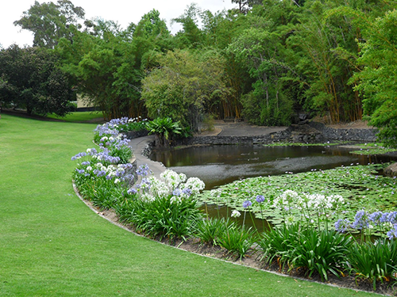
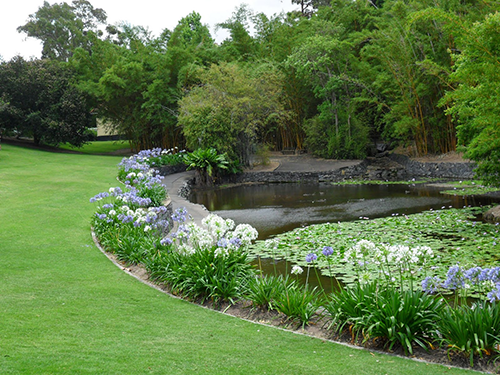
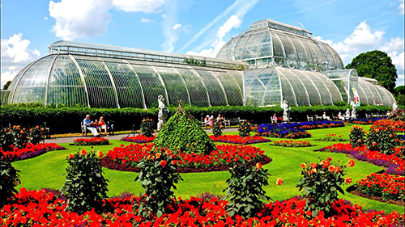
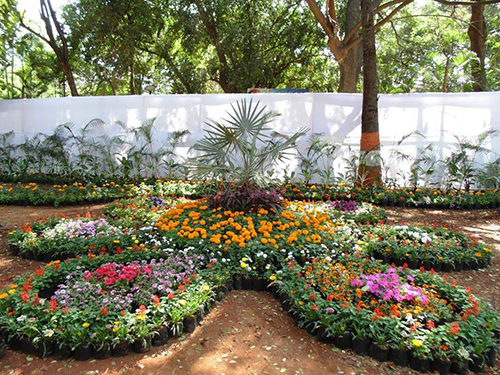
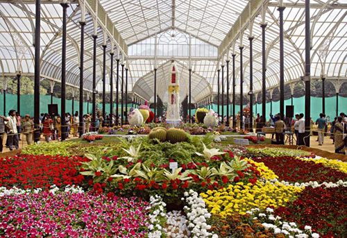
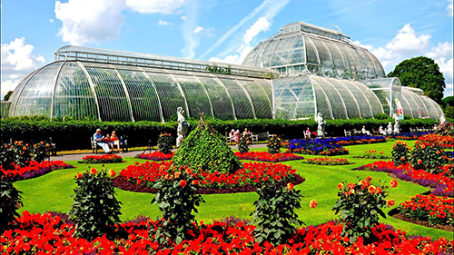
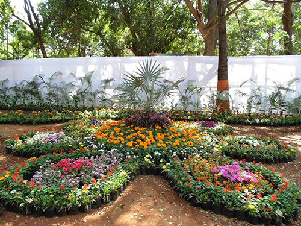
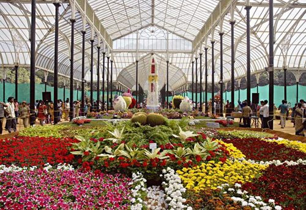
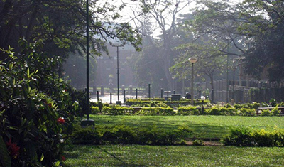
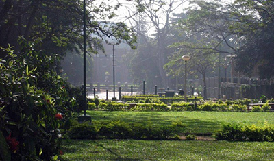

A botanical garden is a curated space where plants are grown, studied, and displayed for the purposes of education, conservation, research, and aesthetic enjoyment. These gardens typically feature a wide variety of plants, from native species to exotic varieties, and often include specialized areas such as tropical, desert, or medicinal plant collections. Botanical gardens play a key role in plant conservation, education, and fostering a connection between people and the natural world.Botanical gardens house diverse collections of plants, including rare and endangered species, showcasing the biodiversity of different regions and climates. Many botanical gardens focus on preserving endangered plants and contributing to global conservation efforts. This may involve research, breeding programs, and seed banking.conservation, research, and aesthetic enjoyment. These gardens typically feature a wide variety of plants, from native species to exotic varieties, and often include specialized areas such as tropical, desert, or medicinal plant collections. Botanical gardens play a key role in plant conservation, education, and fostering a connection between people and the natural world.

 

 





 
